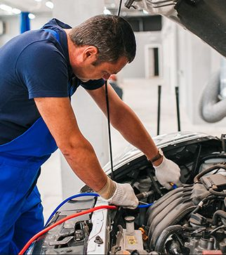
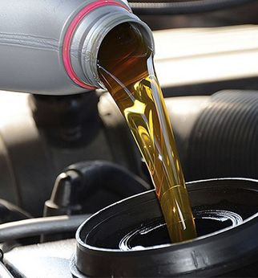
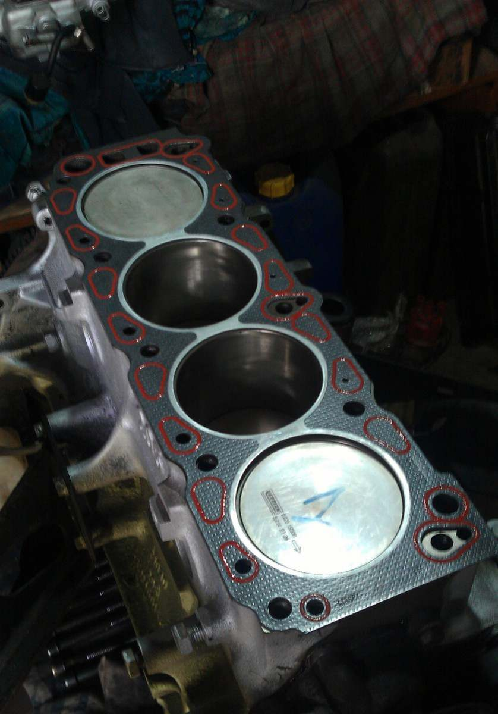
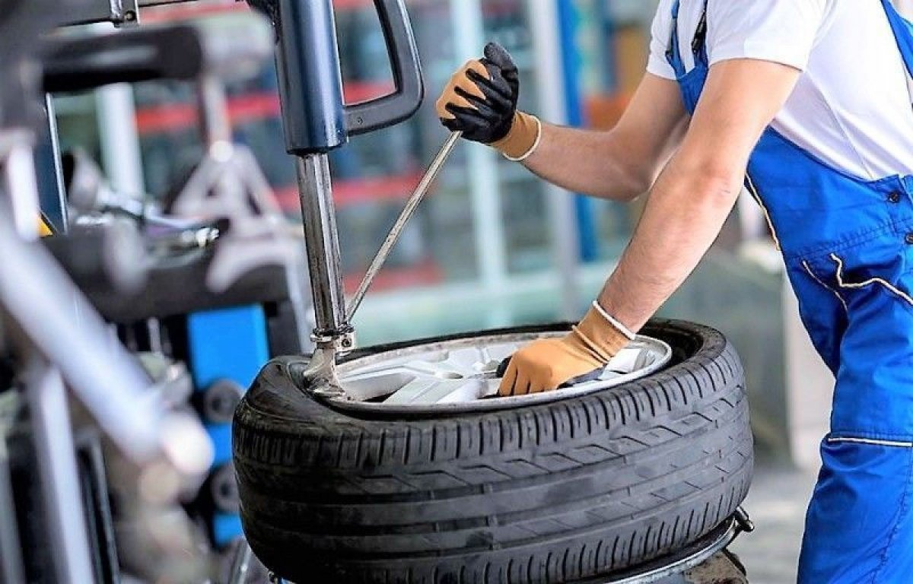

Наш сервис находится по адресу: г.Тула, проспект Ленина, 92
Наш телефон: 8(800)555-35-35
Предоставляемые услуги
-

Техническое обслуживание. Цена: от 600 руб
Техническое обслуживание любого транспортного средства – это один из важнейших аспектов в процессе
эксплуатации. Своевременный и качественный сервис позволит не только обеспечить бесперебойную
работу автомобиля, но и сохранит и поддержит необходимый уровень безопасности.
-

Замена масла. Цена: от 600 руб
Одна из основных причини сокращения срока эксплуатации автомобиля — износ двигателя. Трущиеся части
истираются в результате не только повышенных нагрузок, но и недостаточной смазки. Даже неправильный
выбор масла может привести к поломке, не говоря уже о нарушении сроков замены.
-

Диагностика двигателя.
Двигатель – ключевая составляющая любого автотранспорта. Он эксплуатируется в различных
дорожно-климатических условиях, а также ежедневно подвергается химическим, механическим и температурным
воздействиям. Постепенно происходит процесс изнашивания его частей.
-

Шиномонтаж. Цена: от 500 руб
Наши шиномонтажники имеют сертификаты компаний-лидеров производства автошин (к примеру, Bridgestone),
специально обучены работать с авторезиной, в производстве которой применена технология Run Flat (движение
автомобиля на спущенной шине).